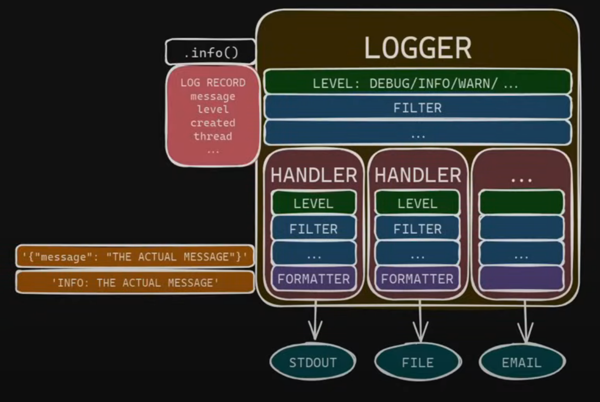

Užitečné balíčky#
Práce s cestami#
os.path#
low-level funkcionální přístup
import os
root = "/data/unicorn/uc-python"
full_path = os.path.join(root, "22_23_zs", "mipy")
print(full_path)
/data/unicorn/uc-python/22_23_zs/mipy
pathlib#
high-level objektový přístup
from pathlib import Path
root = Path("/data/unicorn/uc-python")
full_path = root / "22_23_zs" / "mipy"
print(full_path)
for file in full_path.iterdir():
if not file.is_dir(): print(file)
for file in full_path.glob("*_live*"):
print(file)
/data/unicorn/uc-python/22_23_zs/mipy
/data/unicorn/uc-python/22_23_zs/mipy/05_live.ipynb
/data/unicorn/uc-python/22_23_zs/mipy/config.ini
/data/unicorn/uc-python/22_23_zs/mipy/modul1.py
/data/unicorn/uc-python/22_23_zs/mipy/01.ipynb
/data/unicorn/uc-python/22_23_zs/mipy/09_live.ipynb
/data/unicorn/uc-python/22_23_zs/mipy/config.json
/data/unicorn/uc-python/22_23_zs/mipy/main.py
/data/unicorn/uc-python/22_23_zs/mipy/09.ipynb
/data/unicorn/uc-python/22_23_zs/mipy/03_live.ipynb
/data/unicorn/uc-python/22_23_zs/mipy/02_live.ipynb
/data/unicorn/uc-python/22_23_zs/mipy/config.toml
/data/unicorn/uc-python/22_23_zs/mipy/07_live.ipynb
/data/unicorn/uc-python/22_23_zs/mipy/02.ipynb
/data/unicorn/uc-python/22_23_zs/mipy/10.ipynb
/data/unicorn/uc-python/22_23_zs/mipy/app_signal.py
/data/unicorn/uc-python/22_23_zs/mipy/10_live.ipynb
/data/unicorn/uc-python/22_23_zs/mipy/03.ipynb
/data/unicorn/uc-python/22_23_zs/mipy/04_live.ipynb
/data/unicorn/uc-python/22_23_zs/mipy/waves.py
/data/unicorn/uc-python/22_23_zs/mipy/07.ipynb
/data/unicorn/uc-python/22_23_zs/mipy/pokus.json
/data/unicorn/uc-python/22_23_zs/mipy/receipt.py
/data/unicorn/uc-python/22_23_zs/mipy/good_receipt.py
/data/unicorn/uc-python/22_23_zs/mipy/app.py
/data/unicorn/uc-python/22_23_zs/mipy/05_live.ipynb
/data/unicorn/uc-python/22_23_zs/mipy/09_live.ipynb
/data/unicorn/uc-python/22_23_zs/mipy/03_live.ipynb
/data/unicorn/uc-python/22_23_zs/mipy/02_live.ipynb
/data/unicorn/uc-python/22_23_zs/mipy/07_live.ipynb
/data/unicorn/uc-python/22_23_zs/mipy/10_live.ipynb
/data/unicorn/uc-python/22_23_zs/mipy/04_live.ipynb
shutil#
High-level file operations
kopírování
přesouvání
přístup k právům
atd
modul os#
print(os.getcwd())
os.chdir("/data/codebase")
print(os.getcwd())
/data/unicorn/python/book/content/files_and_packages
/data/codebase
os.getenv("PYTHONPATH")
os.getenv("PATH")
'/data/unicorn/pythonbook/venv/bin:/home/vaclav/.local/bin:/home/vaclav/.local/bin:/data/codebase/m2d/bin:/data/codebase/utils/bin:/data/codebase/mptc/bin:/usr/local/sbin:/usr/local/bin:/usr/sbin:/usr/bin:/sbin:/bin:/usr/games:/usr/local/games:/snap/bin:/snap/bin:/home/vaclav/.local/share/JetBrains/Toolbox/scripts:/home/vaclav/.local/share/JetBrains/Toolbox/scripts'
modul sys#
Modul sys je vestavěný modul, který poskytuje jistý interface mezi systémem a pythoním interpretem. Mezi nejčastější využití patří
Přebírání commad-line argumentů předaných skriptu.#
import sys
print(sys.argv)
['/home/vaclav/.local/lib/python3.10/site-packages/ipykernel_launcher.py', '-f', '/tmp/tmp6z7w4cgw.json', '--HistoryManager.hist_file=:memory:']
Toto je mimořádně matoucí tady v prostředí Jupyter. Pro lepší pochopení uložte předchozí kód do souboru a main.py a z příkazové řádky jej spusťte s několik argumenty navíc. Uvidíte toto:
$ python3 main.py arg1 arg2
['main.py', 'arg1', 'arg1']
Je to běžný způsob, jakým se programům předávají dodatečné argumenty. Pro složitější sadu argumentů se vyplací použít např. vestavěný modul argparse.
Ukončení programu s konkrétním exit code:#
import sys
sys.exit(0)
Přístup k informacím o interpretu či systému#
import sys
print(sys.version)
print(sys.version_info)
print(sys.platform)
3.10.12 (main, Nov 20 2023, 15:14:05) [GCC 11.4.0]
sys.version_info(major=3, minor=10, micro=12, releaselevel='final', serial=0)
linux
Modul datetime#
Vestavěný model poskytující běžné funkce pro práci s datem. Asi nejčastší operace, které budete s tímto balíkem provádět, jsou tyto:
aktuální datum a čas
from datetime import datetime
now = datetime.now()
print(now)
2024-04-22 12:54:51.490545
reprezentace konkrétního data
from datetime import datetime
specific_date = datetime(year=2023, month=10, day=22, hour=5)
print(specific_date)
2023-10-22 05:00:00
formátování data
from datetime import datetime
specific_date = datetime(year=2023, month=10, day=22, hour=5, minute=30, second=3)
formatted_date = specific_date.strftime("%Y%m%d%H%M%S")
print(formatted_date)
20231022053003
parsování data
date_string = "2023-10-22"
parsed_date = datetime.strptime(date_string, "%Y-%m-%d")
print(parsed_date)
2023-10-22 00:00:00
práce s rozdíly (k tomu slouží samostatný objekt
timedelta)
from datetime import datetime, timedelta
now = datetime.now()
future = now + timedelta(minutes=45)
print(now, future)
2024-04-22 12:54:51.511134 2024-04-22 13:39:51.511134
Logging#
Python poskytuje prostřednitvím modulu logging poměrně širokou podporu logování. V modulu existují různé úrovně logování, které určují závažnost logovacích zpráv: DEBUG, INFO, WARNING, ERROR a CRITICAL. Nižší úrovně (např. DEBUG) jsou určeny pro detailní informace, zatímco vyšší úrovně (např. CRITICAL) slouží pro označení vážných problémů, které vyžadují okamžitou pozornost. Obecně je lepší používat pořádný logging než sérii printů - v případě potřeby lze míru logování změnit volbou log level. Základní použití si ukažmě na příkladu
import logging
logging.basicConfig(
format='%(asctime)s - %(levelname)s - %(message)s',
level=logging.INFO,
# filename='example.log'
)
logging.info("This is an info message")
logging.debug("This message will be ignored")
logging.warning("This is a warning")
logging.getLogger().setLevel(logging.DEBUG)
logging.debug("This message will not be ignored anymore")
2024-04-22 12:54:51,516 - INFO - This is an info message
2024-04-22 12:54:51,516 - WARNING - This is a warning
2024-04-22 12:54:51,517 - DEBUG - This message will not be ignored anymore
Modul logging standardně vypisuje všechno do stderr (proto to Jupyter označuje červeně). stdout (standardní výstup) a stderr (standardní chybový výstup) jsou dva datové toky, které jsou běžně používány pro interakci mezi programem a jeho vnějším prostředím. Zatímco stdout se obvykle používá pro běžný výstup programu, stderr se používá pro výpis chybových a diagnostických zpráv.
Velmi detailní a vtipný rozbor logování v Pythonu naleznete na kanále mCoding na YouTube ve videu nazvaném Modern Python logging. Následující pasáž a diagram níže je výtažkem nejdůležitějšího z onoho videa.
Logování je v pythonu rozděleno mezi několik rolí.

logger je hlavní objekt, se kterým interagujeme. Na něm voláme metody jako
.infonebo.warning. Tím vznikají log records, které jsou předávány ostatním objektům k dalšímu zpracování.handler řídí, kam se vlastně log records zapisují. Tím “kam” mohou být soubory, standardní výstup
stdoutnebo např. email. Každý logger může mít libovolné množství handlers (i žádný).filter slouží k odfiltrování zpráv dle různých kritérií, např. s využitím regulárních výrazů. Filter lze definovat jak pro logger, tak pro handler, přičemž každý může mít více filterů.
formatter určuje výslednou podobu zprávy - zda obsahuje čas, v jakém formátu, kde jsou jaké závorky atd.
Klíčovým prvkem logování je samozřejmě filtrování podle LEVEL. Jak handler, tak loggger zpracovávají pouze zprávy vyšší nebo stejné závažnosti, jako je jejich nastavený LEVEL.
Kromě toho Python ve svém logging modulu uspořádává loggery do stromové hierarchie, která může být principiálně velmi komplikovaná. My si z toho zatím vezmeme jedno ponaučení:
Tip
Nikdy nebudeme používat root logger, tedy logování prostřednictvím globáních funcí jako logging.info apod. Zejména pokud bychom měnili chování root loggeru, mohli bychom se dočkat nepříjemné interakce s logováním ostatních modulů.
Budeme vždy vytvářet vlastní loggery pomocí metody logging.getLogger(name).
Note
Logger je implementován jako singleton - to znamená, že pokud logger s názvem name neexistuje, funkce getLogger jej vytvoří. Pokud existuje, dostaneme referenci k existující instanci.
Detailní nastavení#
Logging lze podrobně konfigurovat pomocí slovníků. Dokumentace je v tomto ohledu mírně nepřehledná a tajemná. Ukažme si proto dva jednoduché příklady. Více příkladů s detailním výkladem najdete v zmiňovaném video z mCoding.
log_config = {
"version": 1,
"disable_existing_logger": False,
"formatters": {
"simple": {
"format": "%(levelname)s: %(message)s"
}
},
"handlers": {
"stdout": {
"class": "logging.StreamHandler",
"level": "INFO",
"formatter": "simple",
"stream": "ext://sys.stdout"
},
"file": {
"class": "logging.handlers.RotatingFileHandler",
"level": "DEBUG",
"formatter": "simple",
"filename": "my_app.log",
"maxBytes": 10000,
"backupCount": 2
}
},
"loggers": {
"sample": {
"level": "DEBUG",
"handlers": [
"stdout",
"file"
]
}
}
}
import logging
logging.config.dictConfig(config=log_config)
logger = logging.getLogger("sample")
logger.warning("some warning")
logger.debug("some debug info")
WARNING: some warning
2024-04-22 12:54:51,528 - WARNING - some warning
2024-04-22 12:54:51,530 - DEBUG - some debug info
Pokud bychom chtěli logging pouze do stdout, musíme nastavit loggin handler. Těch je možné i více najednou. Následující příklad loguje do stdout a do souboru zároveň (a ukazuje alternativní cestu, jak nastavit logování).
import logging
import sys
logger = logging.getLogger('my_logger')
logger.setLevel(logging.DEBUG)
# create a StreamHandler for stdout
stdout_handler = logging.StreamHandler(sys.stdout)
logger.addHandler(stdout_handler)
# Log a message
logger.info("This message will go to stdout")
This message will go to stdout
2024-04-22 12:54:51,537 - INFO - This message will go to stdout
Warning
Kniha je napsaná a kompilovaná pomocí Jupyter Book. Protože logging používá singleton a Jupyter startuje jeden kernel per notebook, je pravděpodobné, že poslední příklad se v knize stále vypíše do stderr. Aby to prošlo správně, je nutné v mezičase kernel restartovat.